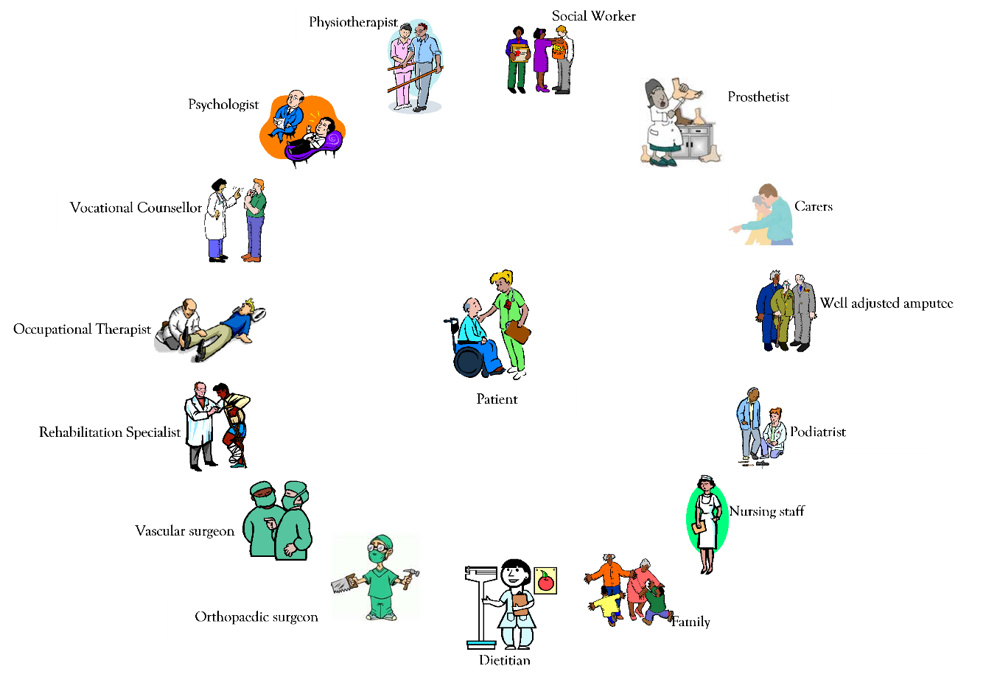
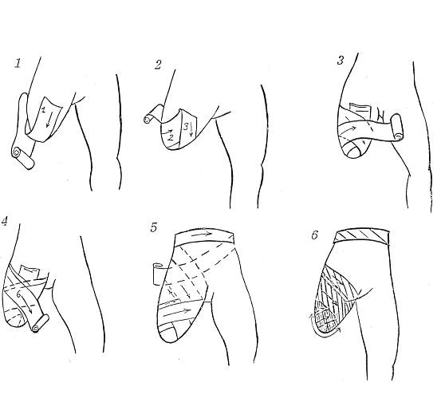
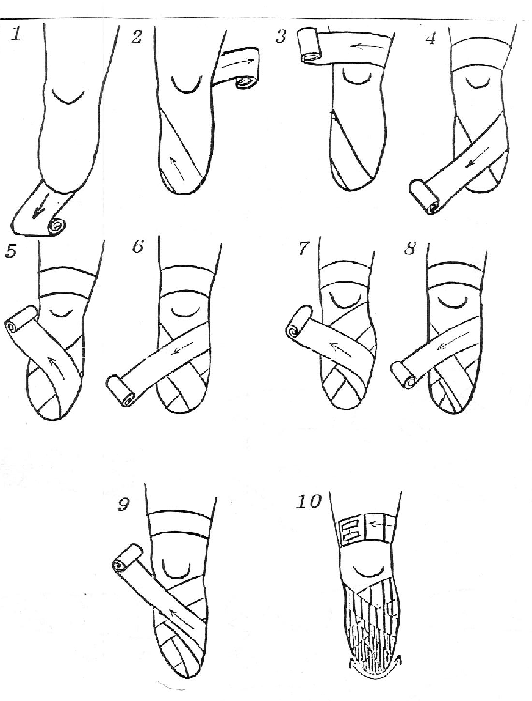
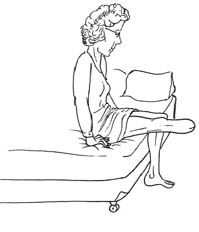
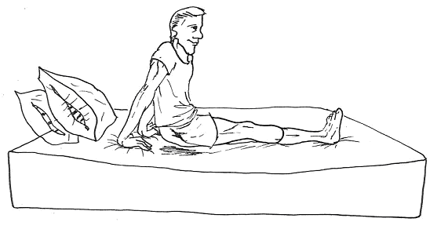
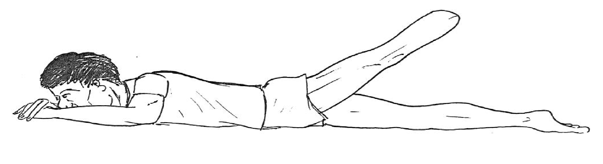
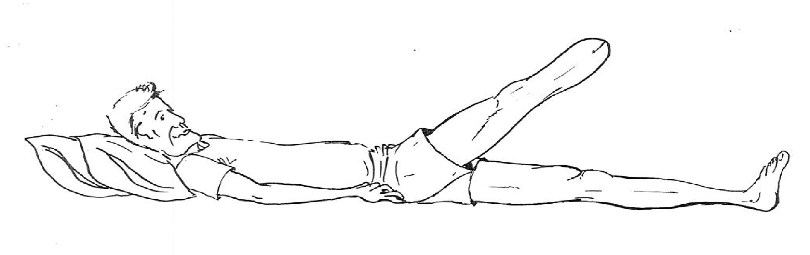
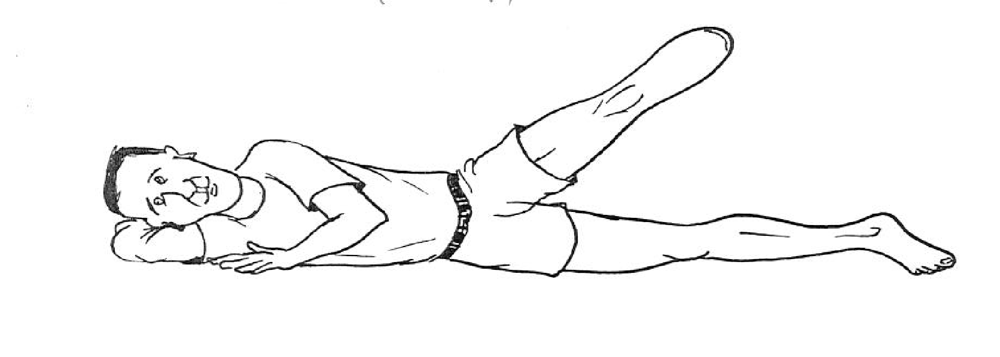
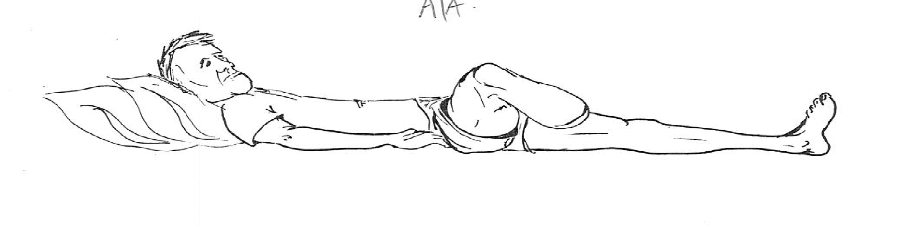

Lower Limb Amputation¶
F. Kohler
“Amputation is the beginning and not the end of a treatment”1
Amputation is a common late consequence of peripheral vascular disease or diabetes, or a result of accidental trauma, civil unrest or landmines. The actual impairment may affect many facets of life including, but not limited to, mobility, activities of daily living, body image and sexuality. Amputation is defined as the surgical, congenital or spontaneous, partial or complete removal of a limb or protecting body part covered by skin. This generally occurs in the transverse plane, but may be in the longitudinal plane if part of a limb is removed.2
Rehabilitation of the person with an amputation of the lower limb is an excellent example of the true multidisciplinary nature of rehabilitation. There are a few areas within rehabilitation where the prevention of secondary functional loss and restoration of function can be as effective as training a person with an amputation in the use of prosthesis.
Every rehabilitation service following an amputation aims to provide the patient who has lost function or ability with the highest possible level of independence (physically, psychologically, socially and economically).3 This objective is achieved through the combined and coordinated use of medical, nursing and allied health professional skills in collaboration with the patient’s personal and environmental resources. The process requires individualised assessments and treatment plans with regular review. Treatment occurs in the acute hospital, in the inpatient and outpatient rehabilitation setting, as well as in the community. Service provision should be seamless across these settings to achieve optimal functional recovery in the shortest time frame.
Incidence and Prevalence¶
The incidence and prevalence of amputation is difficult to determine precisely on a worldwide basis. Reasons for this include the multiple pathological aetiologies which culminate in amputation, the various definitions of clinically significant amputations, the incidence of multiple amputations being performed on the same individual and the same limb but at sequentially and progressively more proximal levels, and the underlying difficulty and deficiency of retrospective data collection in a large number of studies.4 The major diseases that contribute to amputation include arteriovenous occlusive vascular disease, diabetes mellitus and tumours.
There is considerable variation in reported amputation rates between countries. For patients with diabetes and on dialysis, the incidence rate of amputation has been reported as lowest in Japan and highest in Belgium, France and Germany5. In Europe the prevalence of persons with an amputation is between 17 and 30 per 100,000.6 In industrialised countries roughly 65 – 75% of amputations are as a result of underlying disease. The remainder are mostly trauma related, usually secondary to motor vehicle, industrial or farming accidents. In industrialised nations, vascular complications of diabetes are the principal cause of amputation often aggravated by the use of tobacco. In the USA, the annual incidence of non-traumatic amputation of limbs over the last decade is between 22 and 31 per 100,000.7 Over the last decade there has been evidence of a decreasing rate of amputation for type 1 diabetes mellitus and non-diabetes-related minor amputations and a simultaneous increase in minor and major amputations for type 2 diabetes.8 Nonindustrial countries have a higher incidence of amputation due to the higher rate of war and trauma, and less developed medical systems. In the large number of countries which have had recent or ongoing warfare or civil unrest, trauma can account for over 80% of amputations.9
It is expected that the incidence of amputations will continue to increase in the foreseeable future in view of the increasing global incidence and prevalence of diabetes secondary to changing dietary habits, the on-going international and national disputes with continued utilisation of large numbers of land mines, and the increasing motorisation in non-industrialised nations.
Prognosis¶
The mortality rate of amputees is strongly influenced by the high incidence of comorbidities especially in the dysvascular amputee. Studies suggest that the mortality rate for individuals with a non-traumatic amputation of the lower limb is of the order of 40 - 50% within 2 years, and 60 - 70% within 5 years of surgery.10 Following amputation the median time to death for patients with diabetes was 27 months compared to 47 months for patients without diabetes.11 The rate of contralateral amputation is about 15-20% at 2 years. Patients with diabetes have a greater than tenfold increase in the incidence of new amputation compared to those without diabetes. There is a further increased risk of mortality with the relative risk of 1.54 and a mean survival of 2 years for diabetic patients who are on haemodialysis and have an amputation. In the decade up to 2005 there has been no change in prognosis following amputation but the age at amputation has increased suggesting improved pre-amputation care.12 Higher levels of amputation are related to a shorter median time of survival.13
For functional ability, prognosis is inversely related to increasing age and increasing number of comorbidities, and directly related to compliance with treatment.14
The Specialised Rehabilitation Team for Persons with an Amputation¶
Rehabilitation for patients following amputation is most effective with the input of a coordinated multidisciplinary team. The relative importance and input of various team members varies depending on the phase of rehabilitation. A large number of professionals and support persons will be involved in the care of a patient who requires an amputation. Figure 1 illustrates the key members of the team.

Figure 1 Members of the rehabilitation team
The patient’s individual needs are central to all team members.
A peer support program is common practice now. In such programs, patients who have adjusted to their disability following an amputation are introduced to the patient who is about to have an amputation or who has just undergone an amputation. This helps the individual to deal better with the psychosocial consequences of their amputation.
Principles of Patient Assessment¶
The patient should be assessed regularly throughout the various stages of the rehabilitation process. Full assessment of the patient includes a detailed assessment of the medical condition, including any comorbidities and predisposing factors to underlying vascular and peripheral vascular disease in particular, but also any other medical diseases which may interfere with the patient’s activity levels and ability to mobilise. There should be an investigation into any medical or surgical conditions related to the underlying disease process such as coincidental ischemic heart disease or cerebrovascular disease, complications related to the surgery such as delayed wound healing and wound infection, or pressure areas at other sites of the body. A detailed examination of the contralateral limb, as well as the upper limbs, is essential.
A detailed examination of the limbs should be performed and recorded. This includes a muscle chart for the major muscle groups in both the upper and lower limbs, the range of movement of all the joints of the lower limbs, and also of the upper limbs (which will be essential for mobility with the use of aids), a record of the presence or absence, and quality, of pulses in the lower limbs (femoral, popliteal and pedal pulses) and the upper limbs, and any evidence of radial-femoral delay. Documentation of other markers of impaired circulation such as trophic changes of the nails and skin, changes to the hair distribution, or the presence of pregangrenous or gangrenous states is essential. The sensation of the stump and of the contralateral leg is important. Pain sensation is important for the patient to perceive any impending problems with the stump/prosthesis interface such as skin breakdown. It is particularly important to examine proprioception as the patient with the amputation relies largely on the proprioceptive impulses from the stump and the joint above the amputation for feedback regarding the position in space of the prosthesis. Proprioception in the remaining limb is relevant as the patient is more reliant on the proprioceptive feedback from the remaining foot and ankle joints to determine the stance and gait parameters.
Postoperatively, a very detailed examination of the stump is essential. This includes an examination of the wound and the degree and progress of wound healing in comparison to expected progress. The circulation of the skin, in particular the circulation around the skin flap of the stump and around the suture line is assessed by determining the temperature, the presence or absence of pain, pallor, petechiae, cyanosis or poor capillary return, all of which may be indicative of stump ischemia. The circulation of the remaining limb is assessed in order to determine potential problems of the contralateral limb as well. The length and shape of the stump, the degree of oedema of the stump, tenderness of the skin flap, erythema around the suture line, presence of necrosis of the wound margin, wound dehiscence and the presence, type and amount of wound exudate and any other factors relevant to stump healing are assessed. Presence of pain, the range of movement and the strength of the musculature in the joint immediately above the amputation, and the strength of the musculature of the amputated side overall should be assessed and recorded, although at this stage detailed examination may be impeded by postsurgical pain.
A detailed history and examination of the patient’s activity levels and limitations of activity is required. This should include premorbid activity and activity limitations, a time frame and a rate of deterioration of activity prior to the amputation, current activity levels and activity limitations, and expected long term activity levels and potential limitations. Details regarding the patient’s participation and participation restrictions in the major domains of everyday life should be ascertained.
The patient’s motivation for therapy and improvement in activity and participation levels are influenced by numerous factors. Decreased motivation should be explored and contributing factors such as depression, grief reaction, medical complications or lack of supportive environment should be addressed as they arise.
The patient’s emotional state, their reaction to the disease process and to the amputation itself, and their overall psychological condition should be assessed.
The patient’s social environment, social support network, and physical environment to which they will return following their hospitalisation should be assessed.
Phases in the Rehabilitation Process¶
Rehabilitation of the patient with an amputation can be divided into a number of phases which are defined according to the specific rehabilitation goals. Table 1 describes the phases of amputee rehabilitation.
The Preoperative Phase¶
The rehabilitation process commences prior to the amputation. In very acute or emergency amputations it may not be possible for a preoperative rehabilitation consultation to be arranged. In chronic deteriorating conditions, the rehabilitation program may continue during the phase of deterioration with the aim of maintaining the patient’s function, including range of motion of joints, mobility, muscle strength, and cardio-respiratory fitness, or targeted interventions to improve the patient’s function. The aim during this phase of chronic disease and chronic deterioration is to maintain maximum possible physical activity and function which will enable the patient to have the best possible outcome of rehabilitation following amputation.
A full assessment of the patient should be carried out by the rehabilitation team prior to the amputation. This will include full physical and functional assessments, a history of the patient’s psycho-social environment as described above, and if required, an assessment of their home environment. Assessment of the home environment is essential to gain an understanding of the patient’s activity and participation levels preoperatively as well as in the recent past. Alternatively, if major modifications are required for the home to be accessible to the amputee, then these modifications can already be taking place during the pre- or perioperative phases of rehabilitation.
Table 1 Phases of amputee rehabilitation15
| Phase | Hallmarks |
|---|---|
| 1. Preoperative | Assessment of body condition, patient education, surgical level discussion, postoperative prosthetic plans |
| 2. Amputation surgery/ reconstruction | Length, myoplastic closure, soft tissue coverage, nerve handling, rigid dressing, pain control |
| 3. Acute postsurgical | Wound healing, pain control, proximal body motion, emotional support |
| 4. Preprosthetic | Stump shaping, shrinkage, increasing muscle strength, restoring patient locus of control, pain control |
| 5. Prosthetic prescription & fabrication | Team consensus on prosthetic prescription |
| 6. Prosthetic training | Increase in prosthetic wearing and functional utilisation |
| 7.Community integration | Resumption of roles in family and community activities, emotional equilibrium and healthy coping strategies, recreational activities |
| 8.Vocational rehabilitation | Assessment and planning of vocational activities for the future. May require further education, training or job modification |
| 9. Follow-up | Lifelong prosthetic, functional and medical assessment, emotional support |
Level of Amputation
The rehabilitation consultant and other members of the rehabilitation team may be involved in advising the surgeon on the appropriate level of amputation. The basic rule of amputation is that the more that remains of the limb, the better the ultimate function of the patient. The underlying principle should be to save ‘life before limb, but limb is life too’.16 This principle needs to be tempered by what is viable and what is appropriate surgically. Many factors need to be taken into account. A stump of any length can be fitted with an appropriate prosthesis, but some stumps are easier to fit than others. Generally, residual stumps less than 10 cm in length are difficult to fit with prosthesis unless the joint above the amputation is also incorporated into the prosthesis for the establishment and maintenance of stability. Encasing the joint in the prosthesis, however, reduces or eliminates the useful function of that joint. Short residual stumps give a short mechanical lever and moment arm making movement of the adjacent joint more difficult. Long residual transfemoral stumps may make it difficult to accommodate the prosthetic knee joint, resulting in the anatomical and prosthetic knees being at different heights. Similarly, through-knee amputations will create unequal upper leg length when fitting a prosthesis and the knee may protrude through the clothes on sitting. Long transtibial stumps are generally not recommended because of the relatively poor blood supply in the distal third of the leg below the knee.
Determination of amputation levels ultimately requires consideration of all factors, including the potential for primary healing in an optimal time frame. For a transtibial amputation, the level which would be recommended is the standard transtibial level as described in Table 2. The proviso is that there is adequate viable muscle to cover the bone distally so that skin adhesion to the bone edge is minimised and there is minimal risk of bony protrusion through the skin. For transfemoral amputation, the preferred level of amputation is the medium transfemoral level. Table 2 describes the levels of amputation.
A detailed preoperative assessment requires a thorough assessment of sensation of the limbs, and a full muscular skeletal examination looking for weakness, contractures or deformities as previously mentioned, as well as a review of the vascular system including peripheral perfusion and the presence of any pressure ulcers, a cognitive assessment, and an assessment of the coping skills the patient utilises in dealing with traumatic life events. A full vascular examination and investigation should be carried out but this is beyond the scope of this chapter and should generally be done by the vascular surgeon prior to amputation.
Table 2 Levels of amputation in the lower limb
| Hemipelvectomy | Loss of any part of the ilium, ischium or pubis |
|---|---|
| Hip disarticulation | Loss of all of the femur |
| Short transfemoral | \<35% of the femur |
| Medium transfemoral | 35-60% of the femur |
| Long transfemoral | >60% of the femur |
| Knee disarticulation | Through the knee, loss of all of tibia and fibula |
| Very short transtibial | \<20% of tibial length |
| Standard transtibial | 20-50% of tibial length |
| Long transtibial | >50% of tibial length |
| Syme amputation | Ankle disarticulation with retention heel pad |
| Chopart | Disarticulation through the midtarsal joint (Calcaneus and talus are retained) |
| Lisfranc | Amputation between the tarsus and the metatarsus |
| Transmetatarsal | Through the metatarsal bones |
| Ray | Amputation of one or more digits, but not the whole forefoot, usually at the metatarsal level |
The patient’s expectations of the rehabilitation program should be ascertained and rehabilitation outcomes discussed, with the purpose of moulding realistic patient goals early in the rehabilitation process. Anticipated outcome categories following amputation are summarised in Table 3 below:
Table 3 Outline of broad prognostic categories following amputation
Broad prognostic categories Unilateral – Transtibial: almost all patients will return to pre-amputation mobility (if they can don and doff prosthesis) Unilateral – Transfemoral: most patients become part-time prosthetic users. Older patients may rely more on wheelchairs Bilateral – simultaneous: older and frail patients are unlikely to return to mobilising; younger, fitter patients usually manage, but may be part-time wheel chair users Sequential: a better prognosis for returning to independent mobility |
Clinical justification to support selection, and determination of rehabilitation goals and prognosis, should be given to the patients. This should include consideration of the increased energy requirements of prosthetic ambulation as outlined in Table 4, and the interaction with any comorbidities and premorbid fitness levels. Setting and communicating appropriate expected time parameters to achieve goal and sub-goals ensures that the patient has a clear understanding of the rehabilitation process.
Table 4 Percentage increase in energy use for various levels of amputation (per unit distance, as patients partially compensate by walking slower so the increase per unit time is minimised)
| Level of amputation | Percentage increase in energy requirements for ambulation per unit distance |
|---|---|
| Forefoot | 0-10 |
| Hindfoot | 0-25 |
| Transtibial | 25-50 |
| Knee disarticulation | 25-50 |
| Transfemoral | 50-100 |
| Hip Disarticulation | 100 |
Preoperative pain management is essential. There is considerable evidence that good pain control preoperatively results in decreased pain and improved outcomes following an amputation. Pain management may include all the modalities which are discussed in the subsequent section.
Finally, the rehabilitation physician may be asked to assist in optimising the medical status of the patient prior to amputation. It may also be appropriate to involve other medical specialities to ensure all comorbidities are adequately controlled and treated for optimal preoperative and immediate postoperative medical outcomes.
The Acute Postsurgical Phase¶
The major areas of attention in the acute postoperative phase are continuation of medical treatment and medical stabilisation, wound management, and preventative rehabilitation strategies to minimise deconditioning.
Generally, the postoperative wound and stump care is prescribed by the surgeon. Usually, it is appropriate to leave the dressing intact for several days following the operation unless there are specific indications such as haemorrhage, odour suggesting underlying pathology. This is partially dependent on surgical preferences and there is no definitive evidence to show how long a wound should be left untouched following an operation. The aetiology of the wound, the expected rate of recovery, and expected rate of potential complications will determine the surgical management at this stage. Delays in wound healing may require antimicrobial dressings, negative pressure therapy, further surgery for secondary closure, single or repeated debridements for wounds which are infected or unclean, and ultimately skin grafts or rotation flaps for wounds where there is insufficient skin to allow primary or secondary closure and coverage of the stump. While skin grafts are sometimes unavoidable, in general, the surgeon should be advised against skin grafts as the areas which are grafted will be insensate and there is a higher rate of wound breakdown and medium to long-term complications.
The rehabilitation program for the person following an amputation should be individualised. Patient factors, wound factors, the surgeon’s preferences, and the unit preferences all contribute to determining the exact program. There is no overwhelming evidence in the literature that dictates a particular approach.
Generally, the patient should be encouraged to sit out of bed as early as possible, preferably within the first 2-3 days. An active rehabilitation program should be commenced, progressively increasing activity levels as the medical and surgical status of the patient allows. Range of motion exercises should be prescribed for all limbs including the amputated limb. Exercises to strengthen and prevent deconditioning of all muscle groups in both the upper and lower limbs are essential to ensure the optimal level of physical fitness of the patient at this stage. Optimal perioperative fitness will allow the patient to progress to standing and transfer practice at the earliest opportunity. On day 3 postoperatively, the patient should commence standing, transfer practice, and mobilising with appropriate aids. Studies comparing immediate postoperative mobilisation with a variety of prosthetic aids have not demonstrated any clear long-term benefits. It is common practice to mobilise patients with aids, allowing hopping on one leg on an interim basis for 1-2 weeks in order to allow some wound healing to take place prior to fitting prosthesis. The stump needs to be protected at least when the patient is in the upright position, but preferably for most, if not all, of the time. Many patients instinctively attempt to stand on the amputated leg at some stage in the immediate postoperative phase resulting in a fall and injury to the stump if it is not protected. Once there is evidence of wound healing without complications such as dehiscence, extensive haematoma, or infections, and once the sutures have been removed and there is reasonable pain control, the patient is ready for the next phase of rehabilitation. There is some evidence that even if the wound is not healing completely, prosthetic mobilisation can be undertaken and may be beneficial.17
Attention should be given to prophylaxis to prevent venous thrombosis and pulmonary embolism. Generally this is carried out using prophylactic doses of low molecular weight heparins.
As nutritional requirements are increased following any operation, an assessment should be carried out during the pre-, peri- and the immediate postoperative phases and a nutritional strategy put in place.
The main surgical objective in the acute postsurgical phase is promotion of wound healing. The surgeon contributes to wound healing by minimising exposure to potential pathogens, minimising the pressure and tension on the wound through intraoperative haemostasis, and prevention or minimisation of perioperative wound oedema. A variety of wound dressings have been advocated to assist in wound healing. These include simple soft gauze dressings, rigid dressings and more recently removable rigid dressings.
Wound Dressings
Although considerable literature has been published regarding the best kinds of perioperative dressings, there is no overwhelming evidence to promote any particular dressing.18 19 The clinician treating patients following amputation should have a basic understanding of the advantages and disadvantages of the various types of dressings. There is a tendency for patients who are treated with rigid dressings to have a better outcome in the short term, whereas the long-term functional and mobility outcome seems to be independent of the perioperative dressing.
Soft gauze dressings are easy to apply, are low cost, and allow accessibility to the wound as required. The disadvantages of soft gauze dressing are summarised in Table 5.
Table 5 Disadvantages of soft gauze dressings
|
In the long term, healing rates, pain control and prosthetic use are comparable to long-term outcomes associated with the use of other dressings.
Rigid dressings are usually applied by the surgeon in theatre, or by the prosthetist or physiotherapist in theatre, or in the recovery unit. The relative advantages of rigid dressings are summarised in Table 6.
A major disadvantage of rigid dressings is the decreased ability to monitor the stump, which is only possible at routine changes of the cast or on removal of the rigid dressing solely for the purpose of viewing the stump. Other disadvantages include an inability to progressively mould the stump and support stump shrinkage except at times of cast changes. This type of dressing is resource intensive requiring an experienced prosthetist or physiotherapist to be present at completion of surgery, at every cast change, and whenever an acute problem develops. The process of casting, removal and re-casting is also time consuming. Application immediately after surgery, either in theatre or the recovery room, is required as this minimises the potential for stump oedema to develop. Rigid dressings have decreased the need for higher level revision amputation from 22% to 6% compared to soft gauze dressings.20 Rigid dressings are contraindicated in the presence of local infection or significant oedema at the amputation site, or in the presence of large amounts of adipose tissue where technical application and appropriate anchoring would present problems.
Table 6 Relative advantages of rigid dressings
|
The more recently developed removable rigid dressing is a commonly used compromise.21 It still needs to be applied by an experienced person in theatre or in the recovery unit, but it can be removed by anyone at any time and reapplied after viewing the wound. It is especially useful for open wounds. The advantages are similar to those of a rigid dressing and it has also been shown to improve the short-term rehabilitation outcome without any long term effect.22 There is no difference in complication rates when compared to the rigid dressing. Currently in many teams, removable rigid dressings are the treatment of choice.
Recently a number of other dressings have been used. Vacuum-formed removable rigid dressings, at least in one study, have produced similar results to rigid plaster dressings.23
Polymer impregnated socks are thin, lightweight, removable thermoplastic/silicone type socks which provide rigid support, decrease the shear forces, and provide good stump compression. The socks can also reduce the time taken for the stump to be ready for prosthesis fitting.24
Pain and Phantom Sensation
Stump pain, phantom sensations, phantom pain and musculoskeletal pain are frequently present after an amputation. The underlying pathology which has precipitated the amputation may have been causing considerable pain prior to the amputation. There is some evidence that good pain control prior to the amputation, and in the perioperative period, results in improved postoperative pain control in the long term.25 26 27 28 29 30 Adequate management of pain, or prevention of pain, results in a better outcome than trying to control pain after it has become established. In pain management, it is useful to use standardised tools, such as a visual analogue scale to quantify the pain. This will also enable quantification of treatment effects.
Stump pain refers to any pain in the residual limb. In the perioperative setting this is most commonly associated with the surgery, although it may also be associated with the underlying condition or other factors. The incidence of stump pain reaches about 70 % and is most common in the immediate postoperative period, decreasing with time following the amputation.31 32
Surgical pain in the patient with an amputation is treated as any other postsurgical pain. This pain responds well to narcotic analgesics and subsides quickly with time following surgery as the traumatised tissues heal. Beyond the postoperative phase, narcotic analgesics should not be used. There may be residual pain from the underlying ischemia in the amputated leg or in the contralateral leg and this may require treatment. Neuroma formation and an ill-fitting prosthesis are common causes of stump pain in the medium to long term. Neuromas are responsive to treatment with a local anaesthetic infusion but if resistant to this, resection may be required.
Phantom sensation refers to all painless sensations in the amputated part of the limb. Although not completely understood, phantom sensations are likely to be associated with the central nervous system processing of stimuli which are perceived to come from the amputated limb. Most patients with an amputation will experience phantom sensations which may be felt as temperature variation, cramping, tingling and so on. Phantom sensations are best dealt with by reassuring patients about their benign nature and normality. Generally the sensations decrease in intensity and frequency over time, and treatment should only be considered if they cause considerable disruption to function or lifestyle.
Phantom pain is defined as any phantom sensation that is so intense that it is experienced as painful. Phantom pain is very common and reported by 50 to 85% of all patients.33 It may continue to be a problem in up to 40% of patients one year after the amputation. Variability of quality and intensity of pain, and differences in description, make analysis of the literature dealing with phantom limb pain difficult. While the frequency and duration of phantom limb pain seem to decrease in the first six months following amputation, the intensity of the pain can remain relatively unchanged. Risk factors associated with phantom pain, especially in the early postoperative phase, include the intensity and duration of pre-amputation pain, but less so for long-term phantom pain. Treatment of phantom pain has received considerable attention in the literature. Numerous treatments, including pharmaceutical treatments, psychological techniques, physical modalities and mirror therapy have been suggested but none of them is totally effective. The treatments are summarised in Table 7. Medications commonly used in the treatment of neuropathic and phantom pain are the anticonvulsant and the antidepressant groups of medication. The actual pharmaceutical agent or non-pharmaceutical treatment that is used is determined by scientific evidence, local practice, availability and price.
Actual choice of medications or treatment should be based on the side effect profile of the drugs and therapeutic modalities, the medical comorbidities, and the patient’s physical and medical conditions. Table 8 summarises “A Treatment Approach to Neuropathic Pain” by R H Dworkin et al.
Patients with an amputation commonly develop musculoskeletal pain in the lower back, the contralateral knee or other areas. This may follow amputation acutely or as a medium to long-term problem. Assessment needs to be carried out to identify and treat any remediable local or prosthetic factor which contributes to secondary musculoskeletal pain. These could include poor prosthetic fitting with decreasing weight bearing on the prosthesis, leg length discrepancies secondary to incorrect height of the prosthesis, or gait pattern alterations following prosthetic fitting. The prosthetic limb is generally about 1cm shorter than the remaining limb to allow easier clearance during the swing phase. If prosthetic issues or pain secondary to use of walking aids are identified, they should be corrected, but where these are not identifiable, then the pain should be treated as any other musculoskeletal pain and the reader is referred to more comprehensive works regarding treatment of musculoskeletal and chronic pain.
Pre-prosthetic Phase¶
The pre-prosthetic phase of rehabilitation for the patient with an amputation generally commences between one and three weeks after amputation. The predominant focus of care changes from the surgical and medical aspects of care to rehabilitation. In some units this may be the time for the patient to be prepared for discharge. The pre-prosthetic phase may therefore take place in the acute unit, in the inpatient rehabilitation unit or in an outpatient setting with the patient at home. The major focus is to prepare the patient for successful fitting of a prosthesis and to prepare the psychosocial and home environment for transfer of the patient back into the community. This specifically includes stump shaping, stump shrinkage, increasing muscle strength and restoring the patient locus of control. Generally, about 3 weeks after surgery, the wound is ready for removal of sutures or clips depending on the procedure used by the surgeon. If there are wound complications, the management is carried out in consultation with the surgeon who performed the amputation.
Stump Shaping
Stump preparation is required to facilitate prosthetic fitting. This involves reducing the stump oedema, an extension of the treatment by acute wound dressings as discussed earlier. Further reduction of oedema is facilitated by application of an elastic bandage or an elastic sock, commonly called a stump shrinker. The bandage or shrinker should apply graduated pressure, with
Table 7 Commonly employed treatments for phantom limb pain based on publication by Flor34
| Pharmacological |
|---|
Conventional analgesics Opioids Calcitonin β-Blockers Neuroleptics Anticonvulsives Gabapentin Antidepressants Amitriptyline Muscle relaxants |
| Surgical |
Stump revision Neurectomy Sympathectomy Rhizotomy Cordotomy Tractotomy Dorsal column stimulation |
| Anaesthesiological |
Nerve blocks Epidural block Sympathetic block Local anaesthesia Lignocaine |
| Psychological |
Electomyographic biofeedback Temperature biofeedback Cognitive-behavioural pain management Hypnosis |
| Other |
Transcutaneous electrical nerve stimulation Acupuncture Physical therapy Ultrasound Manipulation Electromagnetic stump line Mirror therapy – preamputation Mirror therapy – postamputation Wearing prosthesis |
greater pressure distally, to minimise interstitial fluid. Figures 2 and 3 give a step by step description on how to apply a stump bandage. Alternatively, a precast silicone sock may be used as a stump shrinker. Reducing the oedema assists with improving circulation to the stump.
Table 8 Stepwise pharmacologic management of Neuropathic Pain (NP)35
| Stepwise pharmacologic management of Neuropathic Pain (NP) |
|---|
Step 1 Assess pain and establish the diagnosis of NP; if uncertain about the diagnosis, refer to a pain specialist or neurologist. Establish and treat the cause of NP; if uncertain about availability of treatments addressing NP aetiology, refer to appropriate specialist. Identify relevant comorbidities (e.g., cardiac, renal, or hepatic disease, depression, gait instability) that might be relieved or exacerbated by NP treatment, or that might require dosage adjustment or additional monitoring of therapy. Explain the diagnosis and treatment plan to the patient, and establish realistic expectations. |
Step 2 Initiate therapy of the disease causing NP, if applicable. Initiate symptom treatment with one or more of the following: A secondary amine Tricyclic Antidepressant (TCA) (nortriptyline, desipramine) or a selective Serotonin-Norepinephrine Reuptake Inhibitor (SSNRI) (duloxetine, venlafaxine). A calcium channel alpha 2-sigma ligand, either gabapentin or pregabalin. For patients with localised peripheral NP: topical lignocaine used alone or in combination with one of the other first-line therapies. For patients with acute neuropathic pain, neuropathic cancer pain, or episodic exacerbations of severe pain, and when prompt pain relief during titration of a first-line medication to an efficacious dosage is required, opioid analgesics or tramadol may be used alone or in combination with one of the first-line therapies. Evaluate patient for non-pharmacologic treatments, and initiate if appropriate. |
Step 3 Reassess pain and health-related quality of life frequently using standardised tools. If substantial pain relief (e.g. average pain reduced to <3/10) and tolerable side effects, continue treatment. If partial pain relief (e.g. average pain remains >4/10) after an adequate trial, add one of the other first-line medications. If no or inadequate pain relief (e.g. <30% reduction) at target dosage after an adequate trial, switch to an alternative first-line medication. |
Step 4 If trials of first-line medications, alone and in combination, fail, consider second- and third-line medications or referral to a pain specialist or multidisciplinary pain centre. |
Prevention of Contractures
Prevention of contractures is essential for the patient to achieve maximum functional recovery. It is best commenced in the preoperative setting with a program of education and self-directed or supervised exercises to maintain and, if possible or necessary, to improve the range of motion of all joints of the lower limb in particular, but also of the upper limbs. Postoperatively, it is common for a surgeon to prefer that the joint next to the amputation be rested so as not to stress the wound. In that case, if it is the knee or the hip joint, it should be rested in extension as far as possible, as flexion contractures make mobilisation difficult. The other joints of the lower and upper limbs need to be dealt with in the same manner as described in the preoperative program. In the case of a transtibial amputation, extension of the knee is often achieved by fitting a plaster cast either in theatre or as soon as is practical after the operation, encasing the knee joint to ensure it is kept in extension. If this is not possible, then appropriate attention needs to be given in the postoperative rehabilitation program. A stump board can be used on the wheelchair. To assist in maintaining a range of motion, the patient is generally mobilised as soon as possible.

Figure 2 Procedure on how to apply a stump bandage for a transfemoral amputation
Encouragement may be required to position the lower limb joints and to avoid contractures or to stretch out any early contractures. The patient needs to be vigilant in this important aspect of their care. A program of prone lying up to 30 minutes twice daily to prevent hip flexion contractures is recommended for those that can tolerate this. Figure 4 outlines a programme of exercises to prevent contractures
Patient Goal Setting¶
Patients with an amputation require a structured, efficient, specialised multidisciplinary team to achieve the best outcomes. Following comprehensive assessment of pre-amputation function, activity and participation level, progress following surgery, and the patient’s current status, the rehabilitation prognosis will be refined. Fine tuning of the prognosis is done at rehabilitation case conferences where all team members meet either with the patient being present or, if not present, being informed of the discussion outside of the team meeting. Based on the prognosis, goals are set with the patient, and their carer, where appropriate. A family conference can assist in communicating the prognosis to the patient and carers, increasing the team’s understanding of the home environment and psychosocial support network, as well as refining patient goals. Short and long-term patient goals should be set. These goals need to be realistic and achievable. An indicative time frame for goal attainment should be given and a date for review should be set. This ensures adequate review and tracking of the patient’s progress. Patient involvement is essential as this increases cooperation and compliance with treatment and gives feedback regarding their progress through the rehabilitation program. At regular reviews, most commonly at the weekly case conferences, the goals are reviewed and adjusted as required. The patient goals and their progress should be documented in the treatment plan.

Figure 3 Procedure on how to apply a stump bandage for a transtibial amputation
Agreement is required as to whether prosthetic rehabilitation should proceed as inpatient or outpatient treatment as this has an impact on the major focus of the pre-prosthetic phase. Patients who can mobilise and transfer independently with aids, who are able to attend to personal self-care either independently or with available community support, and who can access both home and rehabilitation facilities, can be discharged into the community at this stage. They can complete their pre-prosthetic and other rehabilitation from home. Medium to long-term outcomes of inpatient and outpatient rehabilitation for the patient with an amputation seem to be similar although there is little published data about this.
Physical Conditioning¶
Rehabilitation following an amputation and mobilisation with a prosthesis is physically demanding. A physical conditioning program to maximise function and performance with and without a prosthesis is initiated.
A strengthening program for the upper limbs will enable the patient to mobilise with aids after an amputation. With sufficient strength present in the upper limbs, the patient may be able to mobilise with crutches on the remaining leg. In all cases the patient will benefit from strong upper limbs to assist with transfers and weight bearing with or without a prosthesis.
Strengthening the muscles of the remaining lower limb will improve stability in standing and allow forward propulsion on walking. Trunk muscle strengthening will allow better stability in view of the asymmetry of the body following amputation.
Amputation has a severe impact on a patient’s dynamic and static balance and changes the centre of gravity. The patient therefore needs a balance retraining program, starting with sitting balance and progressing to supported standing and single limb balance in the pre-prosthetic phase. Further balance training will be required in the prosthetic fitting phase and whenever the components of the prosthesis are significantly altered.
In view of the increased energy demands of prosthetic ambulation, a cardiorespiratory fitness and endurance program will prepare the patient for mobilisation with aids and a prosthesis. Cardiorespiratory fitness ultimately determines the patient’s ability to mobilise outdoors and over longer distances.
Transfer and Mobility Training¶
Transfer training should commence early following an amputation, preferably even before amputation, and should initially be practised without, and later with, a prosthesis in situ. The patient should practice transfers from sitting to standing, bed to chair, chair to toilet, chair to bath or shower chair, car transfers, and off the floor transfers.
Independence in mobility is attained most rapidly if the patient is initially mobilised in a wheelchair. Increasing independence is therapeutic and a strong motivation for patients. Most patients should initially be mobilised as early as possible in a wheelchair. If the home set-up is suitable the patient can then also be discharged with a wheelchair.




Figure 4 Exercises for prevention of contractures
Activity of Daily Living Training¶
The patient should be trained to be independent in all activities of daily living with appropriate aids as required in the postoperative phase. This may require an adaptive environment if the patient is wheelchair bound and might require further modification as the patient’s mobility status progresses.
Wheelchair and Equipment Prescription¶
A suitable wheelchair should be provided for patient use in the postoperative period. Wheelchairs for amputees should have their rear axle offset posteriorly to counterbalance the posterior shift of the centre of gravity in the patient who has had an amputation.
Psychological Issues¶
An amputation signifies an irreversible loss of body integrity to the patient. As with other types of loss, amputation can be accompanied by a grieving process. A patient might go through the usual stages of grieving.
It has been suggested that individuals who have experienced a significant change in physical appearance and function, including amputation, go through 3 phases of adaptation to their changed body image. Initially, there is a period of shock and denial followed by “wishing for restoration” (the patient disguises or hides the change of body image) and ultimately ending in “reimaging the self” some 18 months after the event. In the period of reimaging the self, the patient realises the implications of their loss, understands and accepts their altered body image and is able to adjust their lives to their changed definition of identity and self-image.36
Depression is common following an amputation in the initial post-amputation phase. It often resolves during inpatient rehabilitation, but the incidence rises again after discharge.37 It may be a reactive depression or a normal reaction to losing a limb. The rate of depression continues to be higher in the first and second year following an amputation but it then decreases to the normal expected population rates.38 The prevalence of anxiety is also increased in the first year post amputation and then decreases to a rate similar to that observed in the general population.
There is a complex adaptation to the altered body image which needs to take place. It has been suggested that the amputee undergoes several adaptations to their body image. Initially, they have their pre-amputation body image. Subsequently, they adjust to the body image without a prosthesis and then they adjust again to their body image with a prosthesis. This adjustment process may take a period of months to years.
Psychological support is essential for the patient to adapt appropriately. This may be in the form of psychological support including psychotherapeutic and psycho-education interventions for the patient, carers and family. Individual or group therapy may be utilised. Specific interventions may also target depression and anxiety as is required.
Sexuality¶
Many people with limb amputation report reduced libido. Limb amputation does not directly affect the sexual functioning unless there are other associated injuries. It is possible that the person with an amputation may be embarrassed to show their amputated limb to their partner. Surveys suggest that the majority of patients with amputation engage in sexual activity, including intercourse.39
Overall, there are only a few papers dealing with the sexuality of amputees. Sexuality should be discussed with the patient, and although the sexual function of people with a limb amputation, including fertility and pregnancy, is rarely impaired, other issues relating to body image may impact on sexual activity and sexuality.
Stump Protection¶
Reviews of below-knee amputees have indicated that up to about one quarter suffer trauma to their stumps, with 80% of traumas occurring as a result of a fall.40 About half of patients who suffered a fall required revision surgery including above-knee amputation. Stump protection can minimise stump trauma and the need for stump protection is particularly high in the early phase. The stump can be protected by a number of methods including rigid plaster dressing, removable rigid dressings or prefabricated covers. Prefabricated covers are made by the major suppliers of prosthetic and orthotic equipment. Another method is the use of prefabricated pneumatic dressings which may also be used with prosthetic attachments. As patients may be impulsive, the stump protection should preferably be worn at all times including overnight, as many of the falls occur when the patient is less well oriented, particularly at night when they might attempt to stand up spontaneously. For overnight use, the removable rigid dressing or the rigid dressing are the best options. There are few studies on the relative advantages of the various types of stump protection. There are, however, significantly fewer postsurgical complications, and fewer patients requiring high levels of revision, when they are used.
Concluding Remarks¶
Rehabilitation of the amputee is one of the most rewarding experiences in rehabilitation work. With appropriate motivation, education, cooperation, mutual support, and supply of an appropriate prosthesis, the patient is able to approximate their previous activity and participation levels and conduct a lifestyle which can include many of the activities which they carried out premorbidly. There are many facets in dealing with the amputee, and a multidisciplinary team approach assists the patient in dealing with the challenges of their life as an amputee.
References¶
-
Sir Reginald Watson-Jones quoted in: Durst J. Traumatologische Praxis: in einem Band: Standards und Diagnostik und Therapie fuer alle Fachgebiete. 1997 Stuttgart:Schattauer Publishing. ↩
-
Kohler F, Cieza A, Stucki G, Geertzen J, Burger H, Dillon MP, Schiappacasse C, Esquenazi A, Kistenberg RS, Kostanjsek N. Developing Core Sets for persons following amputation based on the International Classification of Functioning, Disability and Health as a way to specify functioning. Prosthet Orthot Int. June 2009; 33(2):117-129. ↩
-
Australasian Faculty of Rehabilitation Medicine; Royal Australasian College of Physicians: Standards for Adult Rehabilitation Medicine Services in Public and Private Hospitals, 2005 available at http:// www.racp.edu.au/ index.cfm? objectid= 02A65485- 086A- BFB553A30 441DCB479F. ↩
-
Jeffcoate WJ. The Incidence of Amputation in Diabetes. Acta chir Bel. 2005; (105):140-144. ↩
-
Combe C, Albert JM, Bragg-Gresham JL, Andreucci VE, Disney A, Fukuhara S, Goodkin DA, Gillespie BW, Saito A, Jadoul M, Pisoni RL. The Burden of Amputation among Hemodialysis Patients in the Dialysis Outcomes and Practice Patterns Study (DOPPS). Am J Kid Dis. 2009; 54(4):680-692. ↩
-
Thanni LO, Tade AO. Extremity amputation in Nigeria – a review of indications and mortality. The Surgeon. 2007; 5(4):213–218. ↩
-
National Centre for Chronic Disease Prevention and Health Promotion, National Diabetes Surveillance System. Age Adjusted Hospital Discharge Rates for Non Traumatic Lower Extremity amputation per 10,000 population, USA 1988 – 2006 available at http:// www.cdc.gov/ diabetes/ statistics/lea/ fig7.htm . ↩
-
Vamos EP, Bottle A, Majeed A, Millett C. Trends in lower extremity amputation in people with and without diabetes in England 1996 – 2005. Diabetes research in clinical practice. 2010; 87:275 – 282. ↩
-
Esquenazi A. Amputation, Rehabilitation and Prosthetic Restoration. From surgery to community reintegration. Disabil Rehabil. 2004; 26:831-836. ↩
-
Cutson, TN, Bongiorni DR. Rehabilitation of the older limb amputee: A Brief Review. J Am Ger Soci 1996; 44:1388–1393. ↩
-
Schofield CJ, Libby G, Brennan GM, MacAlpine RR, Morris AD, Leese GP. Mortality and hospitalisation in patients after amputation. Diab Care 2006; 29:2252-2256. ↩
-
Carmona GA, Hoffmeyer P, Herrmann FR, Vaucher J, Tschopp O, Lacraz A, Vischer UM. Major lower limb amputations in the elderly observed over ten years: the role of diabetes and peripheral arterial disease. Diab Metab 2005; 31:449-454. ↩
-
Balachundhar Subramaniam, MD, Frank Pomposelli, MD, Daniel Talmor, MD, Kyung W. Park, MD. Perioperative and Long-Term Morbidity and Mortality after Above-Knee and Below-Knee Amputations in Diabetics and Nondiabetics. Anesth Analg 2005;100:1241–7. ↩
-
Pernot HF, de Witte LP, Lindeman E, Cluitmans J. Daily functioning of the lower extremity amputee: an overview of the literature. Clin Rehabil 1997; 11:93-106. ↩
-
Esquenazi A, Meier RH III: Rehabilitation in limb deficiency. 4. Limb Amputation Arch Phys Med Rehabil 1996; 77:S18-S28. ↩
-
Baumgartner R, Botta P. Amputation und Prosthesenversorgung der uneteren Extremität. 1989 Stuttgart: Enke Publisher. ↩
-
VanRoss ER, Johnson S, Abbott CA. Effects of early mobilization on unhealed dysvascular transtibial amputation stumps: A clinical trial. Arch Phys Med Rehab 2009; 90(4):610-617. ↩
-
Nawijn SE, Van Der Linde H, Emmelot CH, Hofstad CJ. Stump Management after transtibial amputation: A systematic review. Prosthet Orthot Int 2005; 29(1):13-26. ↩
-
Smith DG, McFArland LV, Sangeorzan BJ, Reiber GE, Czerniecki JM. Postoperative dressing and management strategies for transtibial amputation: A critical review. J Rehabil Res Dev 2003: 40(3)213-224. ↩
-
Mooney V, Harvey JP, McBride E, Snelson R. Comparison of postoperative stump management: plaster vs. soft dressings. J Bone Joint Surg Am 1971; 53-A:241-249. ↩
-
Wu Y, Keagy RD, Krick HJ, Stratigos JS, Betts HB. 1979. An innovative techniques for below the knee amputation. J Bone Joint Surg Am 61:724-729. ↩
-
Taylor L, Cavenett S, Stepien JM, Crotty M. Removable rigid dressings: A retrospective case-note audit to determine the validity of post-amputation application. Prosthet Orthot Int 2008: 32(2):223-230. ↩
-
Johannesson A, Larsson GU, Oeberg T, Atroshi I. Comparison of Vacuum Formed Removable Rigid Dressing with Conventional Rigid Dressing after Transtibial Amputation. Acta Orthop 2008; 79(3): 361-369. ↩
-
Graf M, Freijah N. Early Transtibial Oedema Control using Polymer Gel Socks. Prostet & Orthot Int. 2003; 27:221-226. ↩
-
Jahangiri M, Jayatunga AP, Bradley JWP, Dark CH. Prevention of phantom pain after major lower limb amputation by epidural infusion of diamorphine, clonidine and bupivacaine. Ann R Coll Surg Engl 1994; 76:324-326. ↩
-
Jensen TS, Krebs B, Neilsen J, Rasmussen P. Phantom limb, phantom pain and stump pain in amputees during the first six months following limb amputation. Pain 1983; 17:243-256. ↩
-
Hanling SR, Wallace SC, Hollenbeck KJ, Belnap BD, Tulis MR. Preamputation Mirror Therapy may Prevent Development of Phantom Limb Pain: A case series. Anesth Analg 2010; 110(2):611-614. ↩
-
Flor H. Phantom-limb pain: Characteristics, Causes and Treatment. Lancet Neurol 2002; 1:182-189. ↩
-
Nikolajsen L, Ilkjaer S, Kroner K, Christensen JH, Jensen TS. The influence of preamputation pain on postamputation stump and phantom pain. Pain 1997; 72(3):393-405. ↩
-
Bloomquist T. Amputation and phantom limb pain: a pain prevention model. J AANA 2001; 69(3):211-217. ↩
-
Gallagher P, Allen D, MacLachlan M. Phantom limb pain and residual limb pain following lower limb amputation: a descriptive analysis. Disabil Rehabil 2001; 23(12):522-530. ↩
-
Ephraim PL, Wegener ST, MacKenzie EJ, Dillingham TR, Pezzin LE. Phantom pain, residual limb pain and back pain in amputees: results of a national survey. Arch Phyl Med Rehabil, 2005; 86(10):1910-1919. ↩
-
Sherman RA, Sherman CJ. Prevalence and characteristics of chronic phantom limb pain among American Veterans. Results of a trial survey. Am J Phys Med. 1983; 62(5):227-238. ↩
-
Flor H; Maladaptive Plasticity, Memory for Pain and Phantom Limb Pain: Review and Suggestions for new therapies. Expert Rev Neurothera. 2008; 8(5):809-818. ↩
-
Dworkin RH, O’Connor AB, Backonja M, Farrar JT, Finnerup JB, Jensen TS, Kalso EA, Loeser JD, Miaskowski C, Nurmikko TJ, Portenoy RK, Rice ASC, Stacey BR, Treede RD, Turk DC, Wallace MS. Pharmacologic management of neuropathic pain: Evidence-based recommendations. Pain. 2007; 132:237-251. ↩
-
Norris J, Kunes-Connell M, Stockard Spelic S. A grounded Theory of Reimaging. Adv Nursi Science 1998; 20:1-12. ↩
-
Singh R, Ripley D, Pentland B, Todd I, Hunter J, Hutton L, Philip A. Depression and anxiety symptoms after lower limb amputation: The rise and fall. Clin Rehabil 2009; 23:281-286. ↩
-
Horgan O and MacLachlan M. Psychosocial adjustment to lower-limb amputation: A review. Disabil Rehabil, 2004; 26(14/15):837-850. ↩
-
Ide M, Watanabe T, Toyonaga T. Sexuality in Persons with Limb Amputation. Prosthet Orthot Int. 2002; 26(3):189-194. ↩
-
Behar TA, Burnham SJ, Johnson G Jr. Major stump trauma following below-knee amputation. Outcome and recommendations for therapy. J Cardiovasc Surg. 1991; 32(6):753-756. ↩